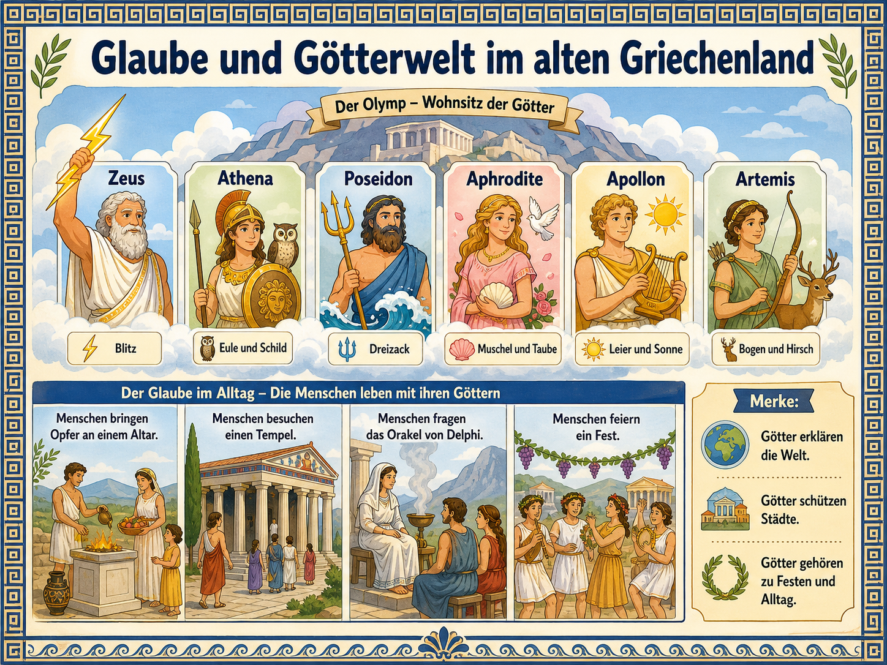
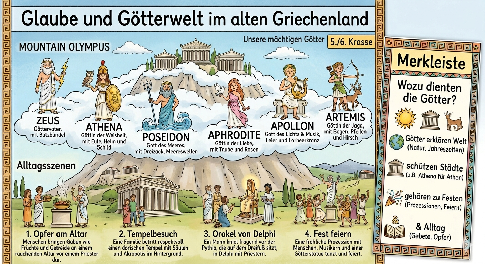

Die Griechen glaubten an viele Goetter. Diese Goetter hatten Aufgaben,
Symbole, Geschichten und Lieblingsstaedte. Religion war deshalb nicht nur
Privatsache, sondern gehoerte zu Alltag, Politik, Festen, Tempeln und
wichtigen Entscheidungen.

Die Uebersicht zeigt die wichtigsten Goetter, ihre Symbole und vier Alltagsszenen: Opfer, Tempel, Orakel und Fest.
Lernidee: Warum war Religion so wichtig?
Die griechische Religion half Menschen, die Welt zu ordnen. Naturkraefte,
Glueck, Krankheit, Krieg, Liebe, Ernte, Geburt, Tod und politische Entscheidungen
wurden mit Goettern verbunden. Wer einen Gott achtete, hoffte auf Schutz,
Rat oder Hilfe. Wer ihn missachtete, fuerchtete Unglueck.
1. Welt erklaeren
Goettergeschichten erklaerten Natur, Schicksal und menschliches Verhalten.
2. Gemeinschaft staerken
Feste, Opfer und Tempel brachten Menschen einer Polis zusammen.
3. Entscheidungen absichern
Orakel und Rituale sollten zeigen, ob ein Vorhaben unter goettlichem Schutz stand.
Die wichtigsten Goetter
Klicke einen Gott oder eine Goettin an. Achte auf drei Dinge:
Aufgabe, Symbol und Bedeutung fuer Menschen oder Poleis.
Religion im Alltag
Religion begegnete den Menschen nicht nur in Geschichten. Sie war im Alltag
sichtbar: am Altar, im Tempel, beim Orakel und bei Festen.

Warum so viele Goetter?
Die Griechen waren polytheistisch: Sie verehrten viele Goetter. Jeder Gott
war mit bestimmten Bereichen verbunden. Das passte zu einer Welt, in der
Menschen viele Unsicherheiten erlebten: Sturm auf See, Krankheit, Krieg,
Ernte, Geburt, Liebe oder politische Entscheidungen.
Goetter waren menschennah
Sie hatten Gefuehle, Streit, Lieblingsorte und Geschichten. Dadurch wirkten sie nah am menschlichen Leben.
Jede Polis hatte Schutzbeziehungen
Athena war besonders wichtig fuer Athen. Tempel und Feste zeigten: Unsere Stadt steht unter goettlichem Schutz.
Rituale gaben Sicherheit
Opfer, Gebete und Orakel halfen, mit Angst und Unsicherheit umzugehen.
Religion war oeffentlich
Feste und Prozessionen waren Gemeinschaftserlebnisse, nicht nur privater Glaube.
Merksatz fuer die Klassenarbeit
Die griechische Religion war polytheistisch und alltagsnah. Goetter erklaerten
die Welt, schuetzten Staedte, gehoerten zu Festen und halfen Menschen, wichtige
Entscheidungen zu deuten.
Training A: Gott, Symbol und Aufgabe
Ordne Aussagen dem passenden Gott oder der passenden Goettin zu.
Training B: Alltag und Religion
Ordne die Situation der passenden religioesen Praxis zu.
Training C: Warum war Religion wichtig?
Entscheide, ob eine Aussage Weltdeutung, Stadtschutz, Alltag/Ritual oder Orakel/Rat beschreibt.
Geschichts-Test
10 Fragen zu Goettern, Symbolen, Alltag und Bedeutung griechischer Religion.